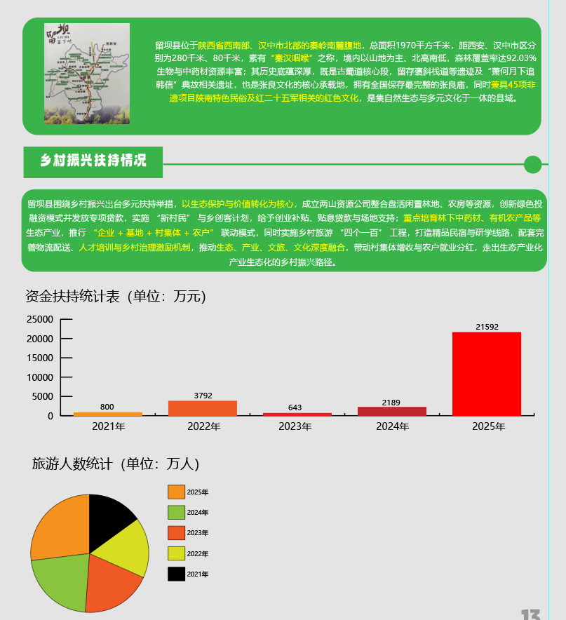
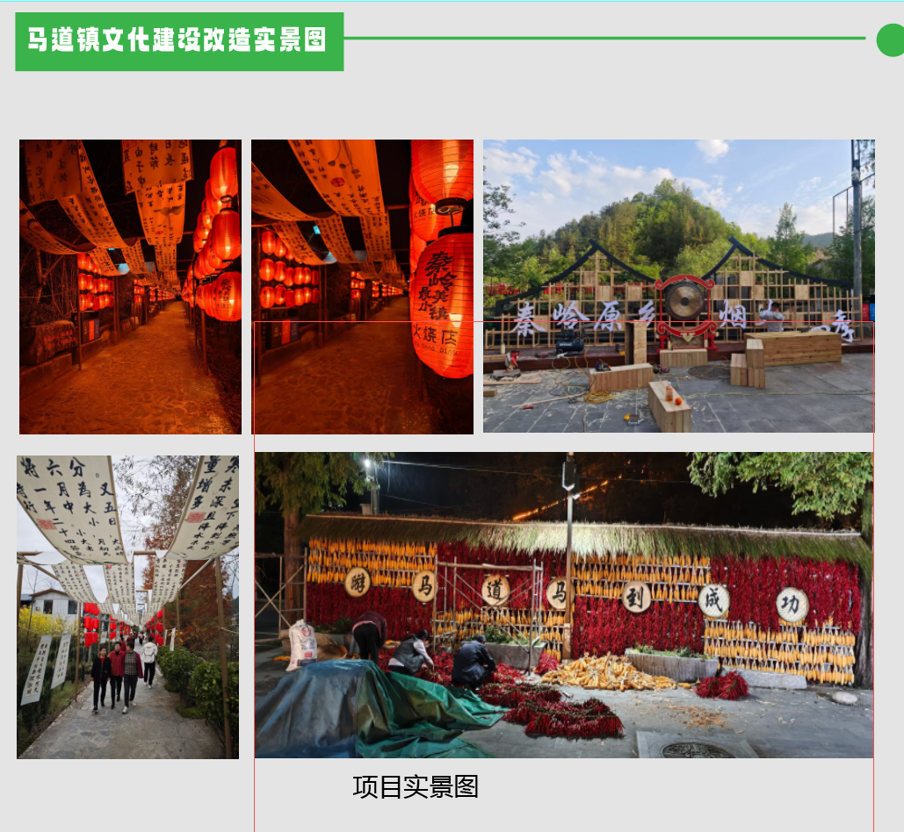
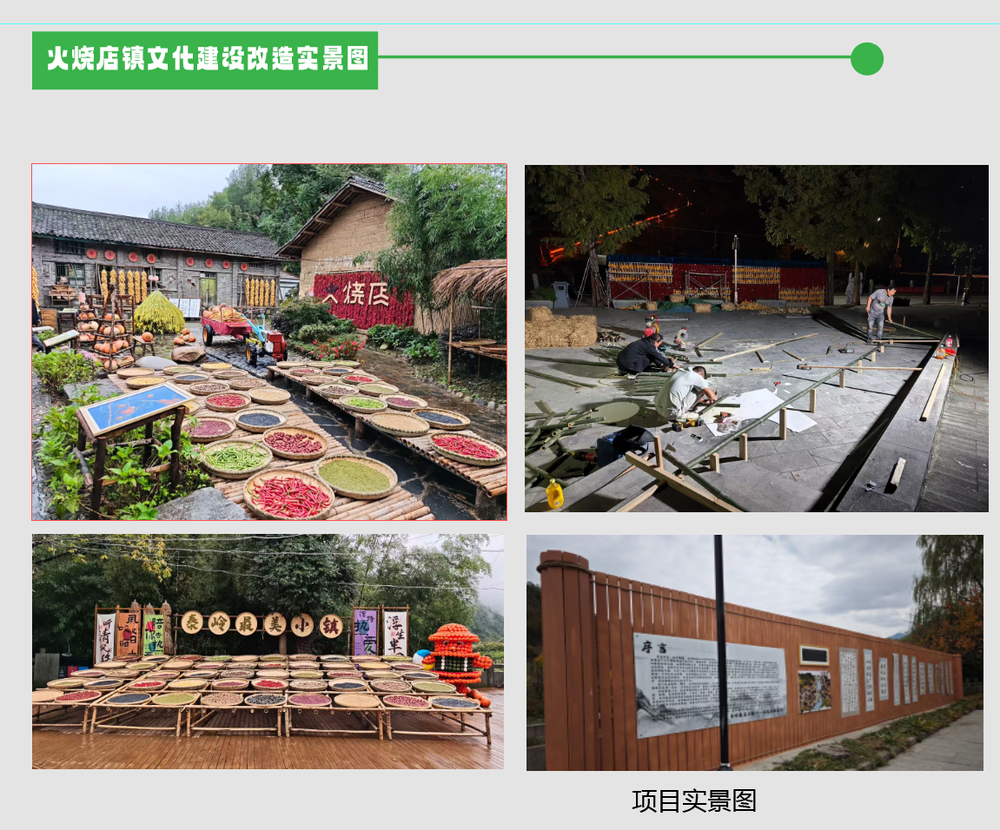
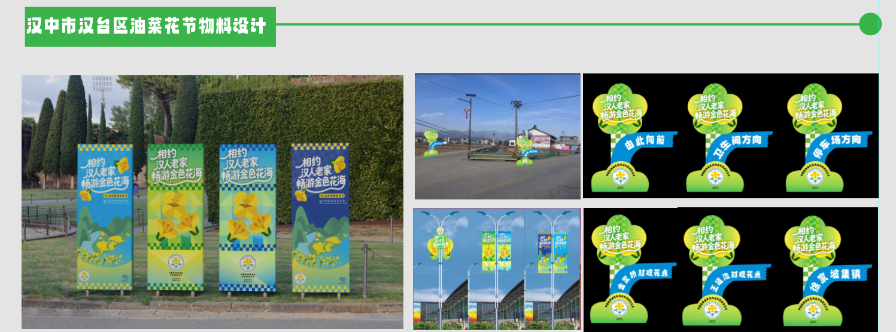

SELECTED WORK / 01 — RURAL CULTURE & TOURISM
让地方文化
回到生活之中。
在秦岭深处，
看见乡村的底色。
留坝，位于陕西省西南部、汉中市北部的秦岭南麓腹地。山地、森林与历史遗迹，共同构成了这片土地的文化坐标。
县域总面积约 1,970 平方千米，距西安、汉中市区分别约 280 千米、80 千米，素有“秦汉咽喉”之称。境内以山地为主，北高南低，森林覆盖率达 92.03%，生物与中药材资源丰富。
留坝既是古蜀道核心段，留存褒斜栈道等遗迹及“萧何月下追韩信”典故相关遗址，也是张良文化的核心承载地，拥有全国保存完整的张良庙。同时兼具 45 项非遗项目、陕南特色民俗，以及红二十五军相关的红色文化，形成自然生态与多元文化交织的县域面貌。
以生态为底，
让产业与文化共生。
留坝县围绕乡村振兴出台多元扶持举措，以生态保护与价值转化为核心，设立西山资源公司整合盘活闲置林地、农房等资源，创新绿色投融资模式并发放专项贷款。通过“新村民”与乡创客计划，给予创业补贴、贴息贷款及场地支持。
产业重点包括高杆林下中药材、有机农产品等生态农业，推行“企业＋基地＋村集体＋农户”联动模式；同时实施乡村旅游“四个一百”工程，打造精品民宿与研学线路，配套完善物流配送、人才培训与乡村治理激励机制。
推动生态、产业、文旅、文化深度融合，带动村集体增收与农户就业分红，走出“生态产业化、产业生态化”的乡村振兴路径。
资金扶持统计
2021—2025 / 单位：万元数据按提供的原稿重绘，未作外部核验。
旅游人数统计
2021—2025 / 原稿图示
原稿未标注人数或百分比，暂保留原始图示。
马道镇
文化建设改造
以书写、灯笼与乡土材料，串联街巷中的文化记忆。

火烧店镇
文化建设改造
让丰收的色彩成为村镇的风景，让地方故事进入公共空间。

与春天相约，
在金色花海相见。
汉中市汉台区油菜花节物料设计
从主题画面、旗帜到方向导视，形成贯穿游览动线的节庆视觉。

把乡土的故事，
留在可感知的日常里。